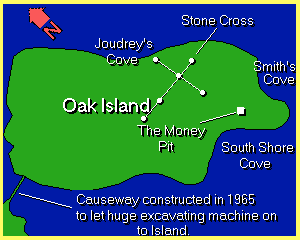

-1-MasterItem.svg)
Stories of Westminster United Church & its People / Page
21
CHARLES BRUCE PITBLADO
OUR FIRST MINISTER, HIS LIFE AND HIS WORLD.
The story begins in the Scottish town of Dunfermline, just few
kilometers north of the Firth of Forth where the River Fourth
and the North Sea meet. Though its current population only just
exceeds 50,000, Dunfermline has a long and storied history that
stretches back to the Neolithic period. As the historic seat of the
Scottish monarchy, it is the burial site of Robert The Bruce and
was the home of King James VI, before he rode to London and
unified the kingdoms, albeit only loosely, of England and Scotland.
Today, it is home to a major Amazon distribution centre — and a
number of lovely tourist spots, including a Norman abbey, a royal
palace and a racing circuit.
Among other notable Dunfermlinites is Charles Pitblado, born
to John Pitblado and Ann McDonald in 1836. The Pitblados stayed in their native
Fife county until
Charles was 15, when his father and uncle moved their families to Salmon River
in Nova Scotia,
a farming community now incorporated as part of the modern city of Truro.
OAK ISLAND GOLD
A STORY OF BURIED TREASURE
Both John and James, Charles’ father and uncle, were
railroad contractors. Contemporary documents refer to them
respectfully as “men of knowledge as lime burners and coal
masters.” Our interest in these two, however, centres on their
interest with another mineral: gold. In the 19th century legend
had it that the gold of pirate Captain William kid was buried on
Oak Island on the south shore of Nova Scotia. The brothers joined
a small consortium of Truro men formed to hunt for that treasure.


Rev. Charles Bruce Pitblado